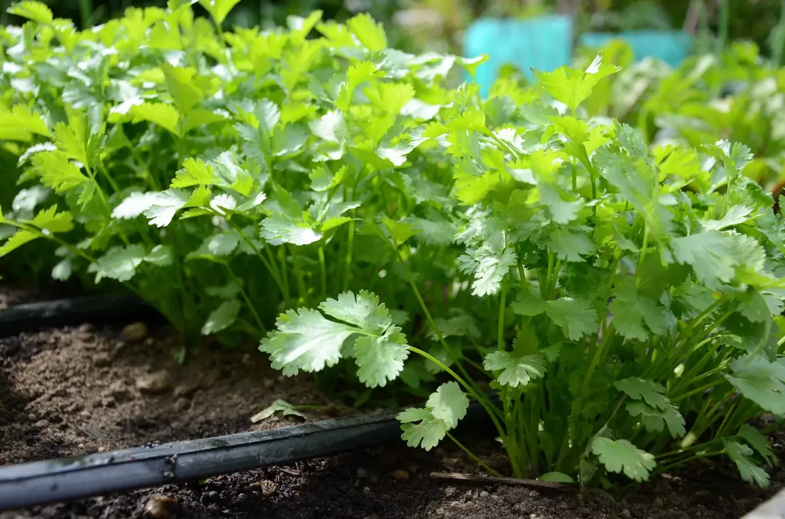
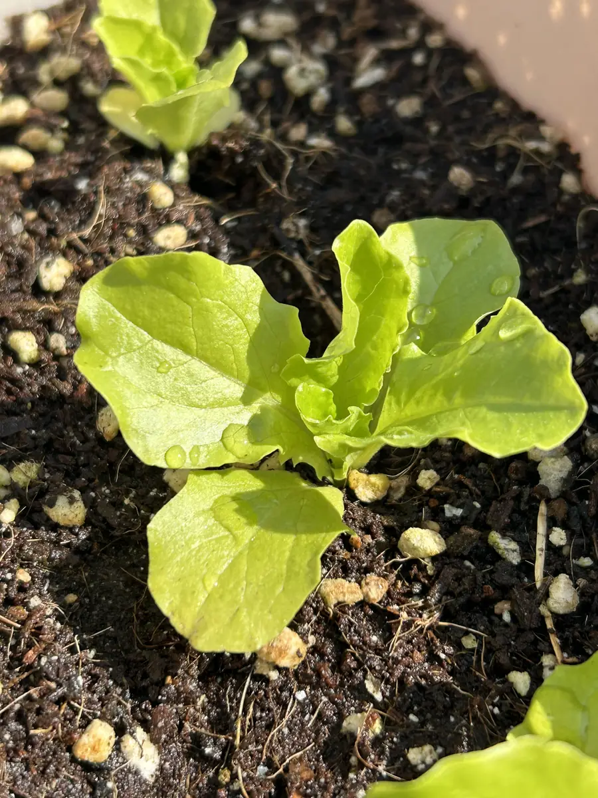
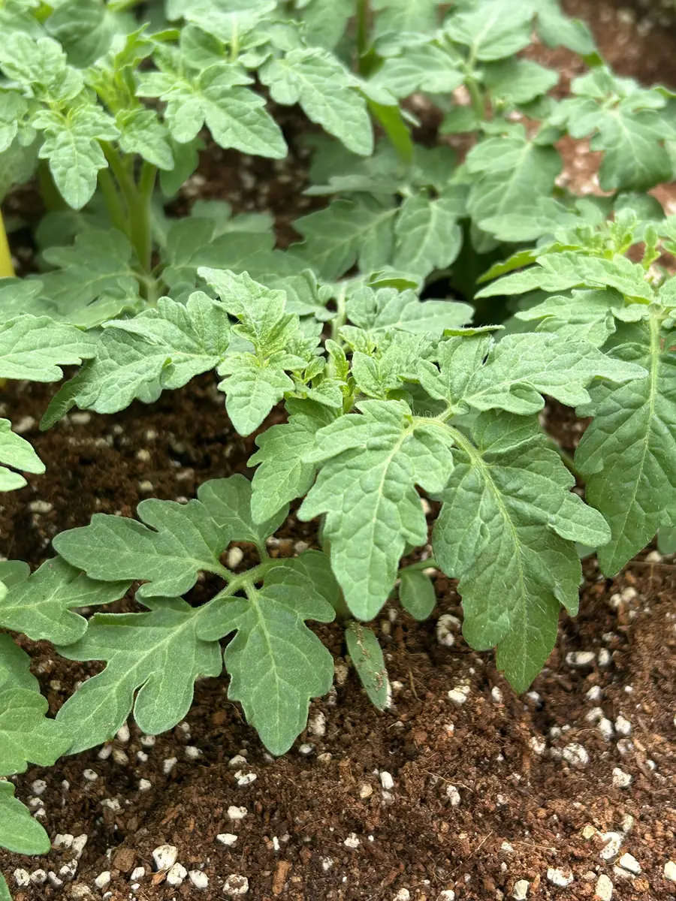
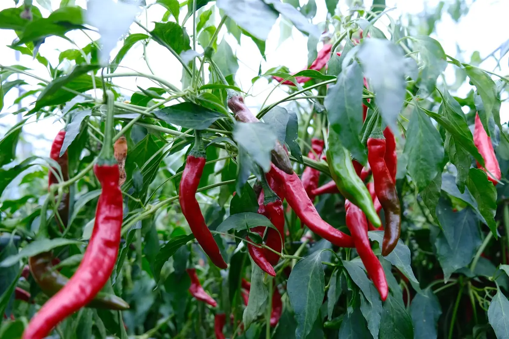
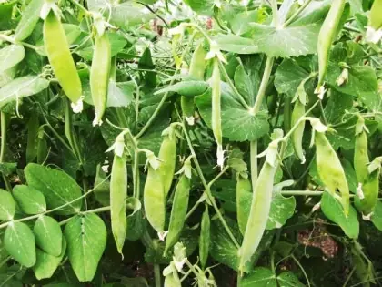
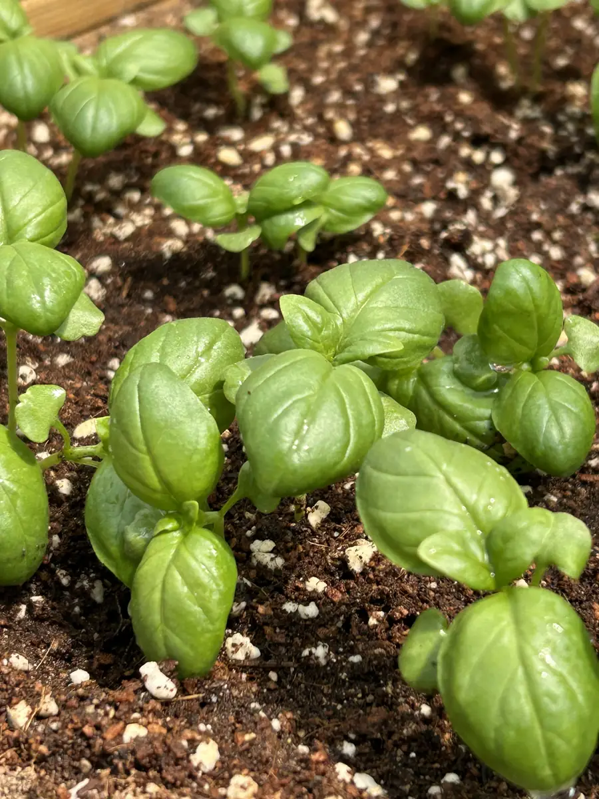

고수 (Cilantro)
Our cilantro thrives with automated moisture control. The IoT sensors monitor soil conditions 24/7.

Our cilantro thrives with automated moisture control. The IoT sensors monitor soil conditions 24/7.

Fresh lettuce grown in both hydroponic and soil systems with optimal moisture levels.

Sweet cherry tomatoes monitored by smart sensors for maximum yield.

Korean peppers growing strong with precision agriculture techniques.

Climbing peas supported by our self-adjusting trellis system.

Aromatic basil thriving under LED grow lights with AI monitoring.